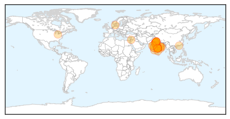
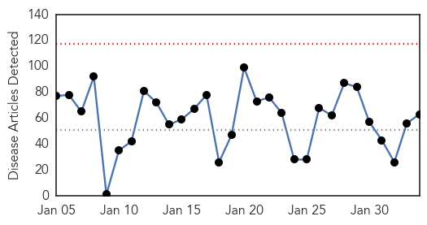
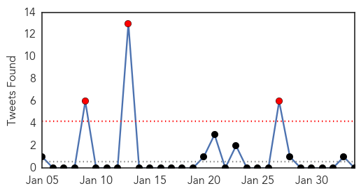
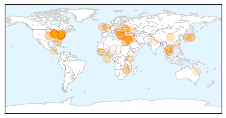
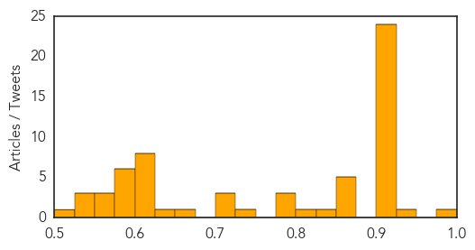

Swine Flu
30-Day Web Trend
10 alerts, 5 warnings

30-Day Twitter Trend
0 alerts, 0 warnings

Article Locations
Article Confidences

Top Articles:
- 1.000
- Swine flu: 4 more cases reported in Malwa region
- 0.999
- Swine flu in India: Newborn girl dies, while mother lives: Gwalior
- 0.999
- Swine flu in India: Doctor tested positive, total count 5 in Odisha
- 0.999
- the edge of knowledge
- 0.999
- Gurgaon schools to teach students about swine flu prevention lessons
- 0.999
- H1N1: after ex-CM, Home Minister tests positive
- 0.999
- Bhopal: Health officials unwilling to provide details on H1N1
- 0.999
- 191 swine flu deaths reported in India in January 2015
- 0.999
- 61 new cases of swine flu reported in Delhi
- 0.999
- 61 new cases of swine flu reported in Delhi
- 0.998
- Madurai on swine flu alert
- 0.998
- Vaccine available in Madhya Pradesh, but not many aware
- 0.998
- One more dies of swine flu in Rajasthan; docs' leave cancelled
- 0.997
- 2 women detected with swine flu; city's first cases of 2015
- 0.997
- Swine flu death toll 62, Tuesday records highest positive cases
- 0.997
- H1N1 scare: Two more die of suspected swine flu in Indore
- 0.997
- 3 more succumb to swine flu in Gujarat; toll rises to 45
- 0.993
- Doctor tests positive of Swine flu
- 0.990
- One more swine flu case detected in Odisha
- 0.988
- Health Secretary assures all assistance to states to tackle swine flu
- 0.987
- Woman, new born die of swine flu in India's Madhya Pradesh
- 0.987
- Swine flu: Congress demands Raje's resignation
- 0.986
- Swine flu claims another life in Kutch
- 0.984
- N Chandrababu Naidu directs officials to fast-track swine flu tests
- 0.980
- Woman from Palghar dies of H1N1 in Mumbai
- 0.977
- Health Secretary assures all assistance to states to tackle swine flu , AniNews.in
- 0.972
- Congress demands Raje's resignation
- 0.970
- Araku MP discharged from hospital
- 0.963
- Haryana makes a week's leave mandatory for flu-hit students
- 0.958
- Haryana makes a week's leave mandatory for flu-hit students
- 0.958
- Swine flu cases decreasing
- 0.943
- Andhra: Araku MP Down with Swine Flu
- 0.943
- A week's leave mandatory for all flu-hit students
- 0.916
- Government orders 10 lakh Tamiflu tablets for swine flu
- 0.907
- Goa records first swine flu death
- 0.882
- Confidence in Government Linked to Willingness to Vaccinate
- 0.759
- Congress to target Gujarat government on swine flu, graft during Assembly
- 0.722
- Congress to raise swine flu, graft issues, in Gujarat Assembly
- 0.669
- New GRH Dean inspects fever wards
- 0.527
- Health Secretary reviews preparedness of states affected by H1N1 assures all
- 0.523
- Health Secretary reviews preparedness of states affected by H1N1
Top Tweets:
-
No tweets found for Feb 03, 2015
Unknown
30-Day Web Trend
0 alerts, 0 warnings

30-Day Twitter Trend
3 alerts, 0 warnings

Article Locations
Article Confidences
Top Articles:
- 0.995
- Mystery of the virus paralysing children in the US
- 0.943
- South Sudan Inches Closer to Eliminating Guinea Worm Disease - South Sudan
- 0.917
- Chicago Tribune
- 0.917
- Chicago Tribune
- 0.917
- Chicago Tribune
- 0.917
- Chicago Tribune
- 0.917
- Chicago Tribune
- 0.917
- Chicago Tribune
- 0.917
- Chicago Tribune
- 0.917
- Chicago Tribune
- 0.917
- Chicago Tribune
- 0.917
- Chicago Tribune
- 0.917
- Chicago Tribune
- 0.917
- Chicago Tribune
- 0.917
- Chicago Tribune
- 0.917
- Chicago Tribune
- 0.917
- Chicago Tribune
- 0.917
- Chicago Tribune
- 0.917
- Chicago Tribune
- 0.917
- Chicago Tribune
- 0.917
- Chicago Tribune
- 0.917
- Chicago Tribune
- 0.917
- Chicago Tribune
- 0.917
- Chicago Tribune
- 0.910
- The world windows to Thailand
- 0.906
- What CDC statistics say about vaccine-related illnesses, injuries and death
- 0.866
- Obama to meet Jordan's King Abdullah on Tuesday -source
- 0.866
- Russia denies blame over Ukraine, says Kiev must talk to rebels-RIA
- 0.866
- Two Russians kidnapped in Sudan's Darfur region
- 0.866
- CAMBODIA PRESS-EU seeks negotiation on timber agreement
- 0.866
- THAILAND PRESS-Army denies martial law plot
- 0.831
- Saudi bans imports of Kuwait cows due to virus - Kuwait Times
- 0.808
- West Texas News
- 0.789
- St. Joseph County Health Department offers free flu shots to residents
- 0.788
- 54 waiting on trolleys threatens patient safety in Limerck
- 0.784
- KSU Offers Tuberculosis Screenings for All Students – The Sentinel The Sentinel
- 0.729
- Two die after being rejected at Parirenyatwa Hospital
- 0.710
- Thousands trapped in eastern Ukraine: MSF calls for safety of civilians and respect for medical facilities - Ukraine
- 0.705
- 2014 Salsarita Shigella Outbreak in Arkansas
- 0.702
- "Prevention Is Better Than Cure"
- 0.652
- USAF: Japanese encephalitis vaccine required for those serving in Japan and Korea
- 0.643
- Benedictine University Adds Two New Faculty Members to the Master of Public Health Program
- 0.604
- US bars Venezuelan officials over alleged rights abuses
- 0.604
- US 'looking at options' to arm Ukraine against separatists
- 0.604
- UN court dismisses Croatia, Serbia genocide claims
- 0.604
- US judge replaces UN Gaza inquiry head after criticism
- 0.604
- Pope approves martyrdom for slain archbishop Romero
- 0.604
- Harper Lee to publish 'Mockingbird' sequel 55 years on
- 0.604
- IS group claims to have burned Jordanian pilot alive
- 0.604
- Homemade bomb explodes in Cairo, airport put on alert
Showing top 50 articles...
Top Tweets:
-
No tweets found for Feb 03, 2015